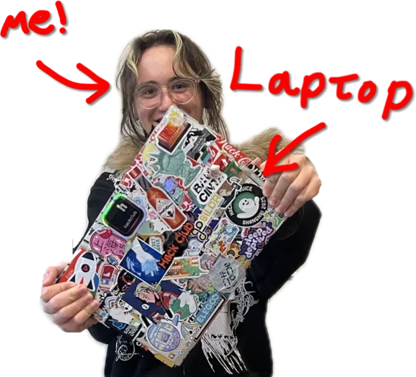
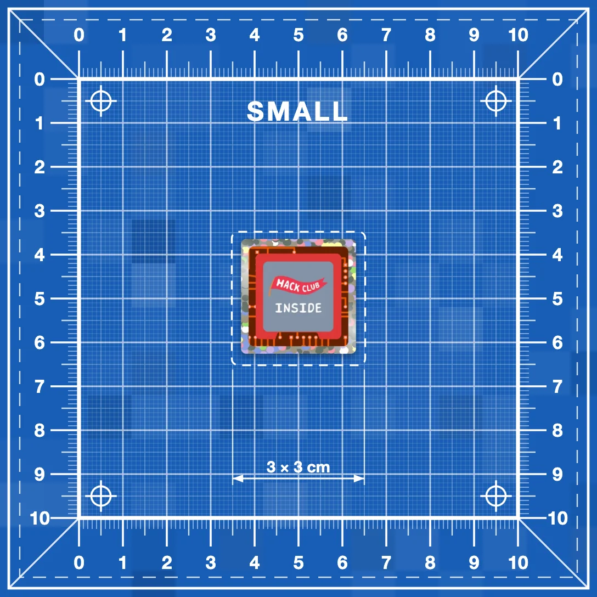
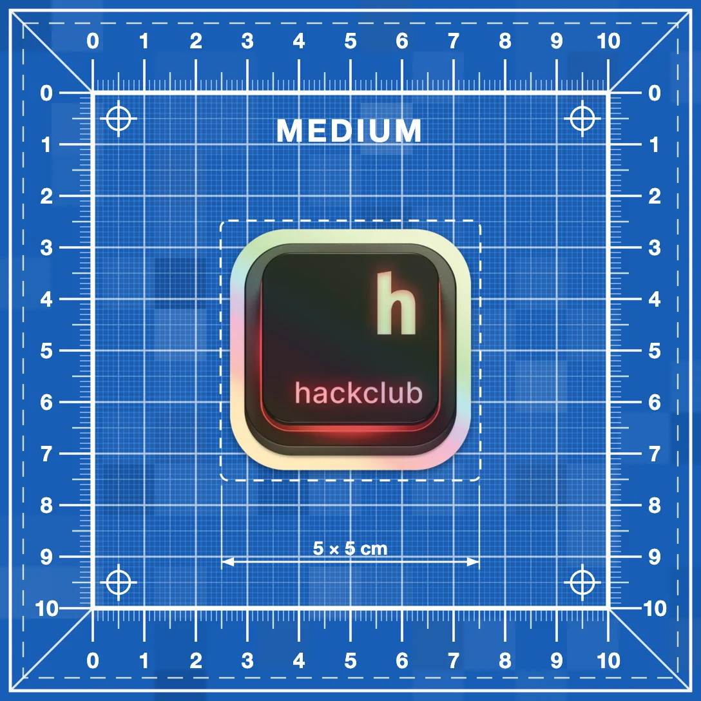
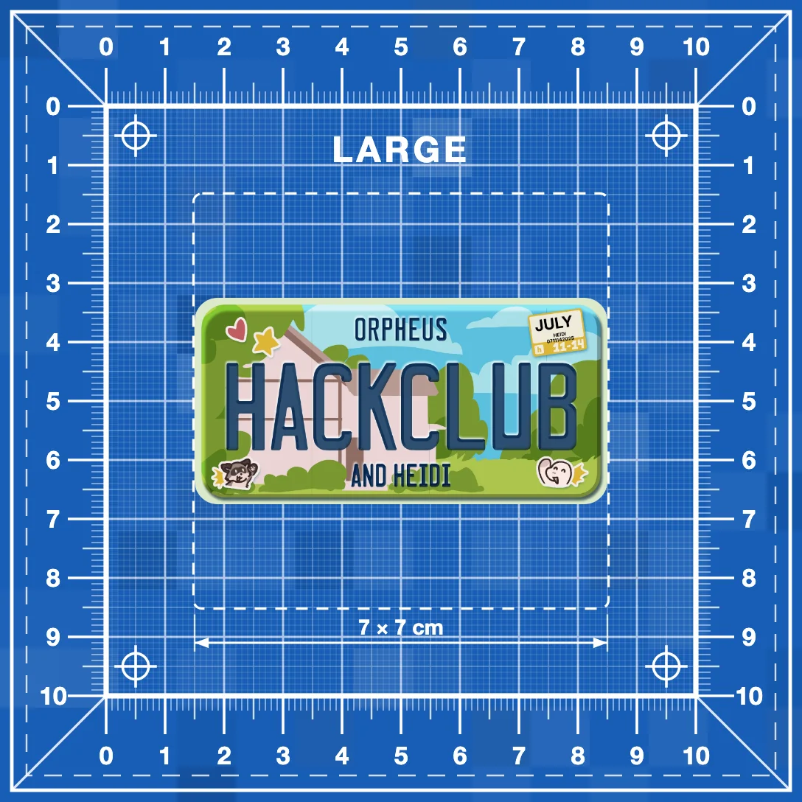

Ship a project. Get your sticker stuck on my laptop.
LIVE on stream, on camera, while you watch. I post you a copy to keep as well.
You need two things: a coding project you have shipped with at least 1 hour logged on it in Hackatime, and a sticker design.
- I will be streaming until
- The more coding hours you log, the bigger the sticker you can get
- I print it, cut it, and stick it on my laptop on camera

Prizes
Ship a project, and upload your sticker design and I will put it on my laptop during the stream.
I will also send a copy of your sticker to you after the stream.



How it works
- Log hours in Hackatime
- Ship a project
- Submit and select your sticker size
- Watch it on live
Anyone 18 or younger who submits a coding project during the stream can participate. A game, a tool, website, whatever you want to build.
Build and ship a project. Log at least 1 hour on your project in Hackatime, then submit below before the deadline.
Every submission is approved before I print it, anything I deem hateful, sexual, or generally vulgar will be rejected.
Submissions close when the stream ends
I check every submission and every hour by hand, so there is a wait between submitting and me printing your sticker. Stickers go on the laptop as I get to them, and I will post your stickers to you after the stream.